老的流程是「选题 → 蓝图 → 脚本 → 审核 → 优化」四步直通。1.1 在前面加了一步**写前分析**，在后面加了一步**稿件检查**：
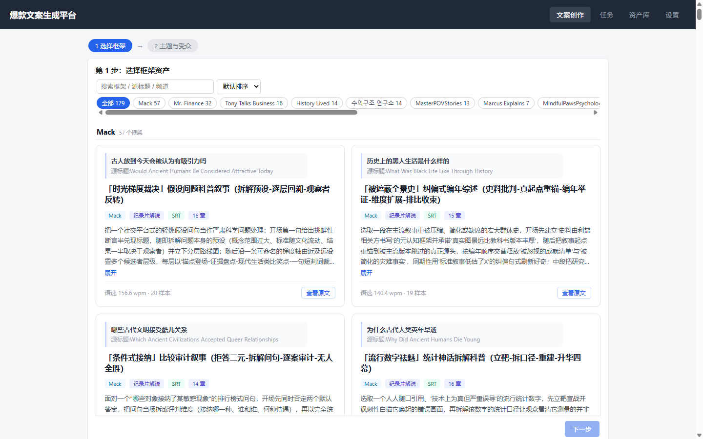
搜索框只匹配**框架名、源标题、频道名**，不匹配资产 id（比如输 kr11 是搜不到的，要输「一笔交易」或频道「수익구조 연구소」）。
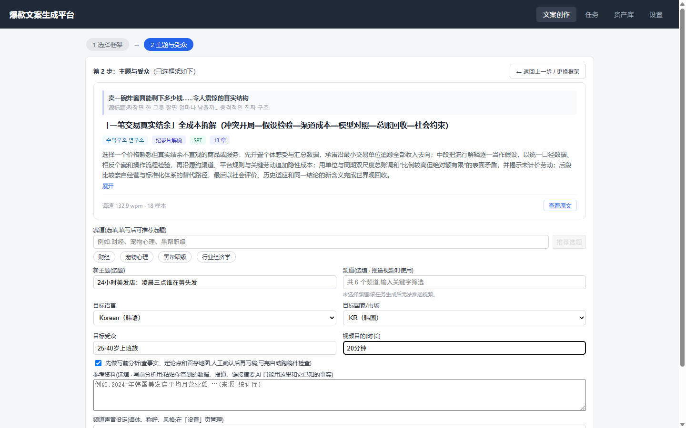
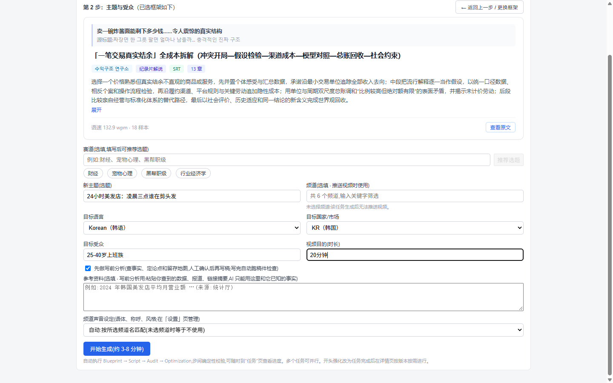
点「开始生成」后，任务先进入 写前分析中，跑完停在 待确认分析，不会自己往下走。
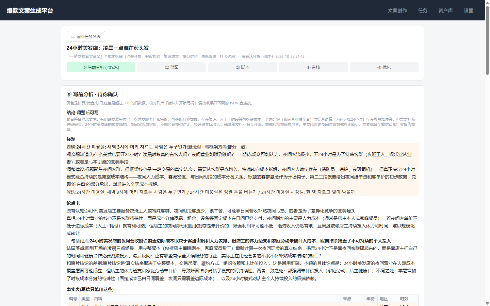
上面这张是真跑的结果：结论是「调整后可写」，标题判为「部分一致」，所以标黄提醒你先看一眼。
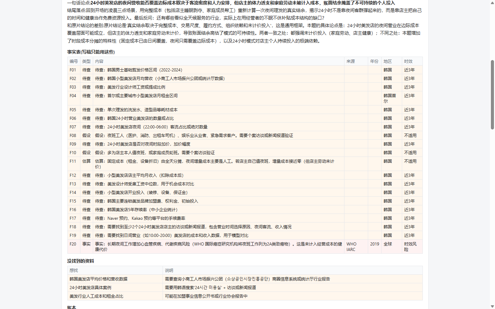
事实表是写稿时**唯一允许使用的数字来源**。黄底越多，说明这题越依赖你补料。
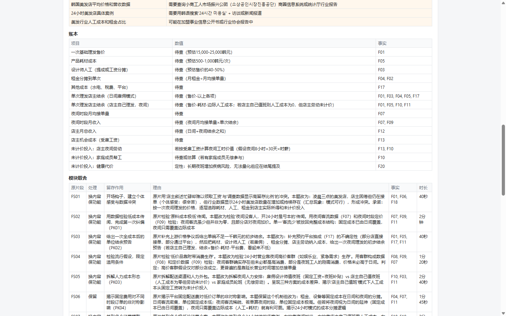
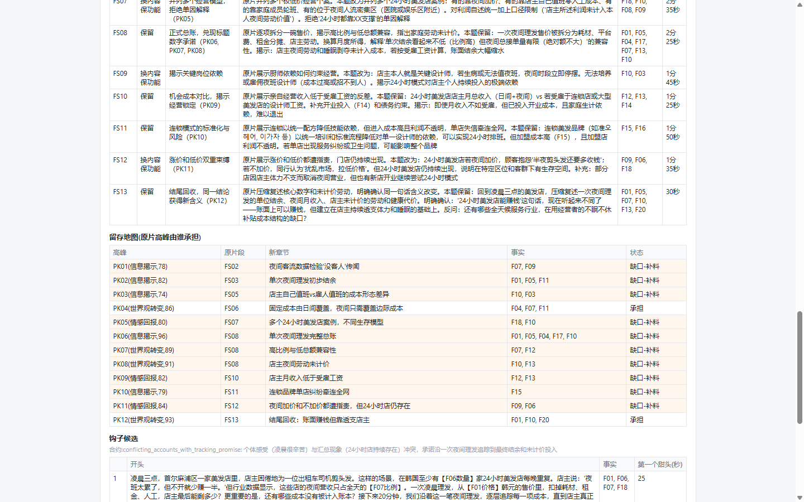
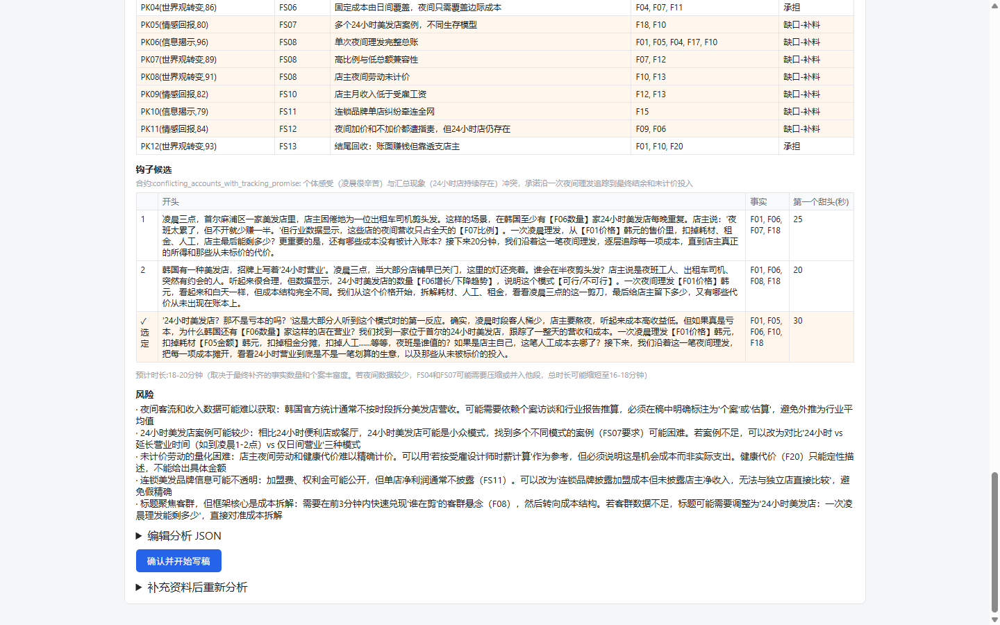
| 位置 | 怎么改 | 改完的影响 |
|---|---|---|
| 标题 | 展开「编辑分析 JSON」，改 title.final_title | 蓝图和稿子都用这个标题 |
| 事实表 | 增 / 删 / 改条目（内容、来源、年份、地区、类型） | 写稿只能用表里的数字，删掉就不会用 |
| 模块取舍 | 改每段的 decision | 决定哪段保留、哪段换内容、哪段删 |
| 留存地图 | 改每行 status：承担 / 缺口-补料 / 缺口-接受弱化 | 「接受弱化」的高峰不再计入留存检查的及格线 |
| 钩子 | 改 hook.chosen 的序号（0/1/2） | 决定开场用哪一条 |
改完点「确认并开始写稿」。如果想补资料重来，用「补充资料后重新分析」，会重跑一次分析（再一次模型调用）。
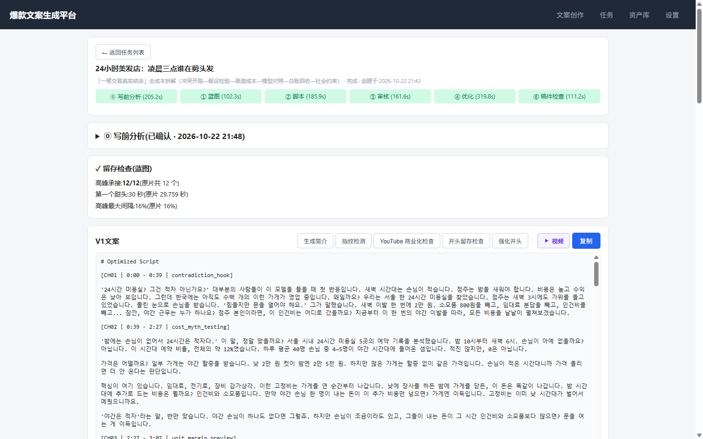
实测耗时（20 分钟那一单）：写前分析 205 秒、蓝图 102 秒、脚本 186 秒、审核 162 秒、优化 320 秒、稿件检查 111 秒，合计约 18 分钟纯模型时间。
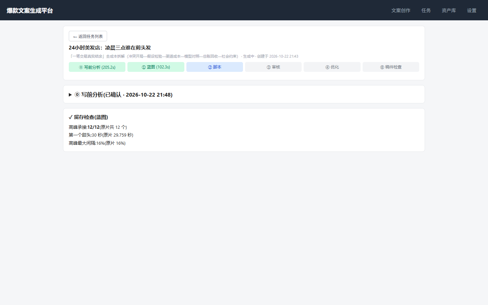
| 指标 | 含义 | 这次实测 |
|---|---|---|
| 高峰承接 | 原片的高峰有几个被新稿的章节声明接住 | 12/12，全接住 |
| 第一个甜头 | 开场第几秒给出第一个反常识数字；不能晚于原片 | 30 秒（原片 29.76 秒，靠 0.5 秒容差通过） |
| 高峰最大间隔 | 新稿相邻高峰的最大间隔占全片比例，不能明显大于原片 | 16% 对原片 16% |
carries_peaks」，不是稿子里到底写没写。所以「12/12」只能说明结构上没丢，不能保证内容真好。真正的质量还得靠你读稿。
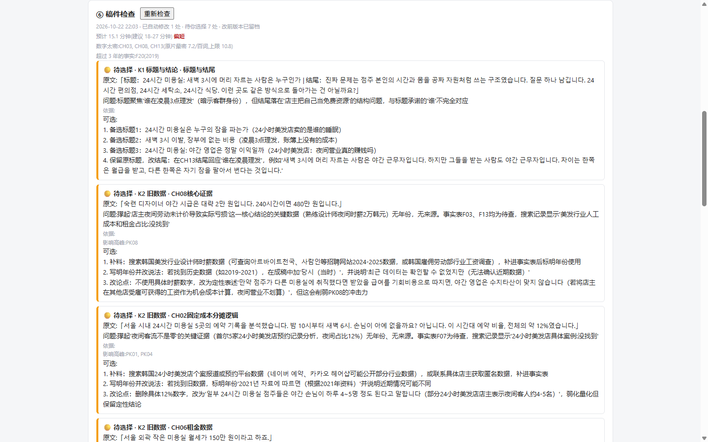
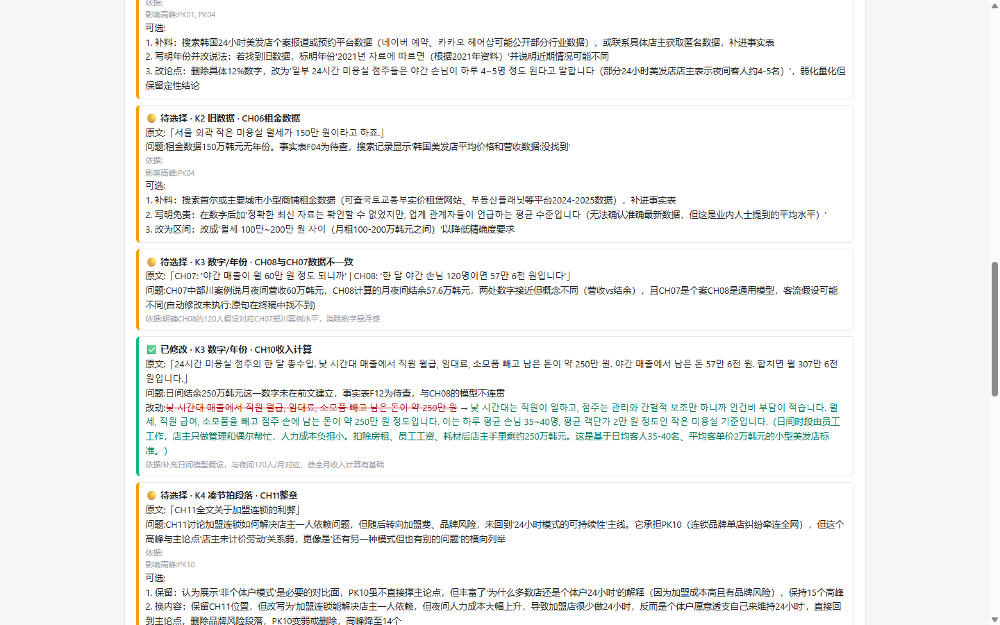
| 编号 | 查什么 | 会自动改吗 |
|---|---|---|
| K1 | 标题和结尾结论对不上 | 不改，给 3 个备选标题 + 1 个「保留标题改结尾」 |
| K2 | 核心证据超过 3 年 | 不改，给补料 / 写明「当时」/ 改论点 |
| K3 | 数字、年份自相矛盾 | 会改，但要求原句在稿里恰好出现一次；改前版本存档 |
| K4 | 为凑节拍放进来的段落 | 不改，标出来并说明删了会丢哪个高峰 |
| K5 | 篇幅、数字密度 | 不改，只提示 |
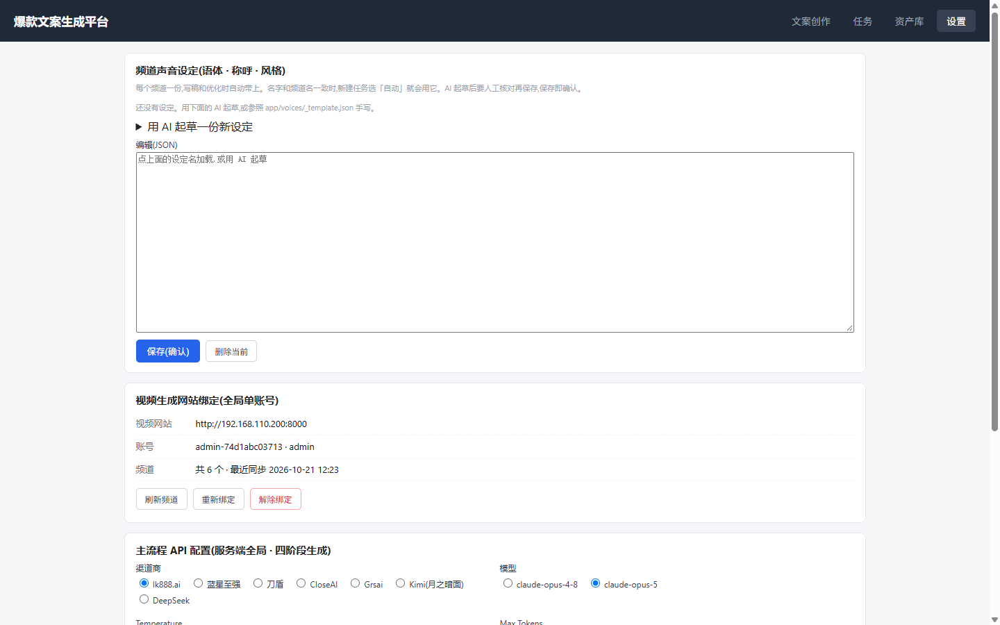
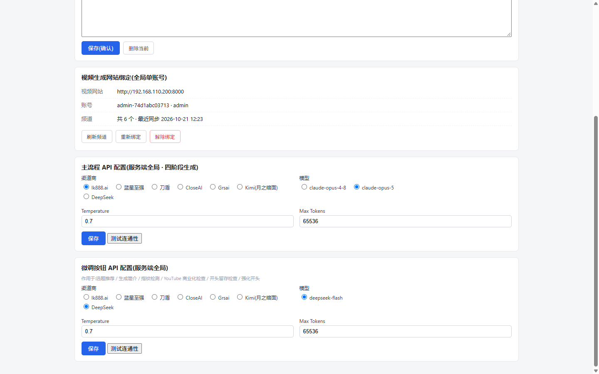
声音设定的用法：设置页填频道名 + 语言 + 一句说明，粘贴 1–3 篇你自己的旁白 → 「AI 起草」→ 核对后保存。之后新建任务时，选了对应频道、声音选「自动」，就会注入到写前分析、写稿、优化三步。
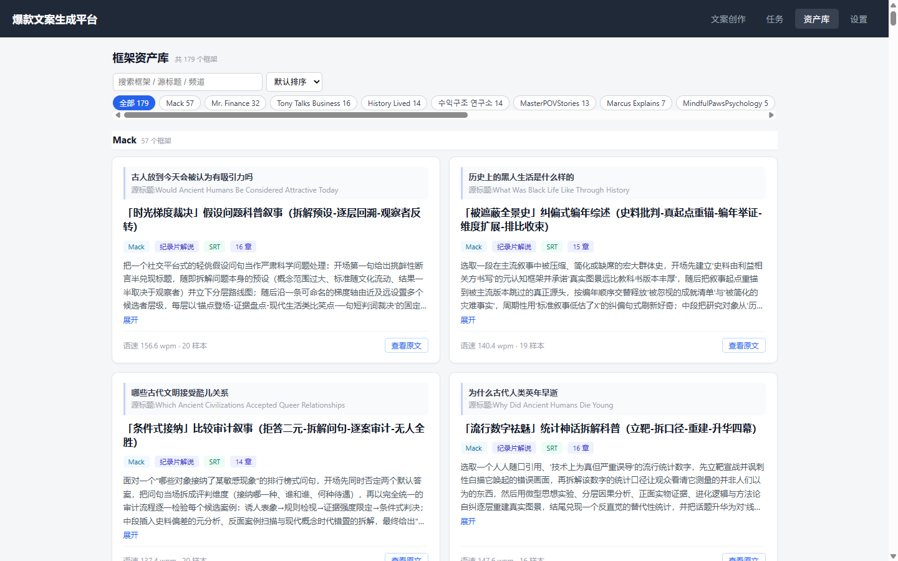
每份资产的结构段都有一张留存卡，写前分析的「留存地图」和「替换库」都来自它。179 份里 167 份的「抽象动作 / 替换条件」经过 AI 重写，剩下 12 份仍是程序生成版（7 项齐全，只是抽象动作等于段目的）。
| 状态 / 现象 | 含义 | 怎么办 |
|---|---|---|
| 写前分析中 | 模型在查事实、写论点 | 等 1–4 分钟。重启服务会自动重跑，不会卡死 |
| 待确认分析 | 等你核对 | 列表里点「去确认」，或直接进详情页 |
| 失败 + 429 | 渠道限流/额度 | 等 1 分钟点「重试」 |
| 失败 + 输出被 max_tokens 截断 | 单次输出超上限 | 设置里把 Max Tokens 调大（现在 65536 已经很大） |
| 分析结论是「换框架」 | 这题不适合这个资产 | 别往下写，换一个资产重新分析 |
| 稿件检查「待选择」很多 | 大多是证据时效问题 | 回分析里补事实，或重写；不要忽略 |
| 第一单（资料留空） | 第二单（贴真实资料） | |
|---|---|---|
| 资产 / 题目 | kr11 · 24小时美发店（中文题） | kr11 · 24시간 미용실（韩语题） |
| 分析结论 | 调整后可写 | 待补 |
| 事实表 | 20 条：待查 16 / 假设 2 / 估算 1 / 事实 1 | 待补 |
| 留存检查 | 12/12，甜头 30 秒，间隔 16% | 待补 |
| 稿件检查 | 11 条：自动改 1、待选 7 | 待补 |
| 篇幅 | 15.1 分钟（建议 18–27，偏短） | 待补 |
| 总耗时 | 20 分 31 秒 | 待补 |